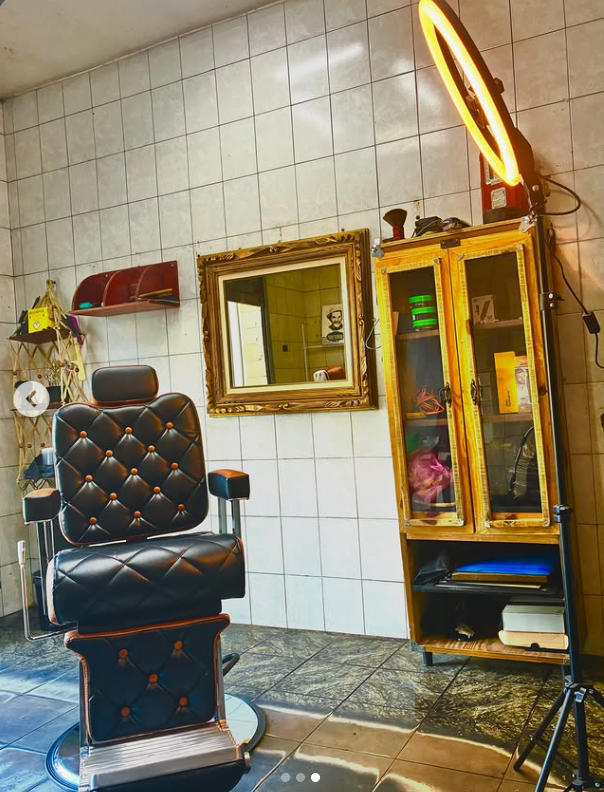

RÚSTICO / PRESENÇA DIGITAL
Da primeira impressão
ao horário marcado.
Uma proposta para apresentar o espaço, facilitar a escolha de serviços e organizar o atendimento. Explore a experiência antes de definir a operação real.
Experimentar o agendamento →
Conhecer. Escolher. Experimentar.
Site responsivo, serviços editáveis, galeria ampliada, contato principal pelo WhatsApp (a conectar), agenda opcional de demonstração, confirmação simulada, remarcação, cancelamento e visão demonstrativa do barbeiro. Reservas só nesta aba, sem cadastro.
WhatsApp, IA e agenda compartilhada.
Número oficial, catálogo e horários reais, servidor de agenda, modelo de IA, envio de mensagens, painel autenticado e lembretes. O chat desta proposta é guiado por regras e não usa uma IA conectada. O fluxo de nome, serviço, data, horário e confirmação já funciona na mesma agenda da aba.
COMO DEVE FUNCIONAR
Uma agenda.
Uma confirmação confiável.
O assistente só confirmará depois que o servidor validar e registrar. Se o horário estiver ocupado, deve oferecer alternativas. A IA não pode inventar preços nem horários.
Um teste de cinco minutos.
- Clique em “Agendar pelo WhatsApp”, comece a conversa e informe um nome fictício. Escolha serviço, data e horário no próprio chat.
- Confira o resumo, confirme a simulação e veja o mesmo nome e protocolo na Agenda do barbeiro.
- Na Agenda do barbeiro, experimente remarcar ou cancelar; o nome continua ligado ao registro.
- Teste os atalhos de serviços e disponibilidade no assistente.
- Use os testes de conflito/falha para ver como evitar confirmações incorretas.
O que precisamos combinar.
Nome oficial, WhatsApp, endereço, serviços, preços, duração, expediente, intervalo, política de cancelamento e fotos autorizadas. Depois, escopo de implantação, custos recorrentes e quem acompanha o atendimento.
O código contém um núcleo SQLite e adaptadores separados para piloto local. Eles ainda não estão conectados ao site online nem homologados com contas reais. Nenhuma mensagem ou lembrete foi enviado. Não há promessa de resultados comerciais.
Voltar à experiência →